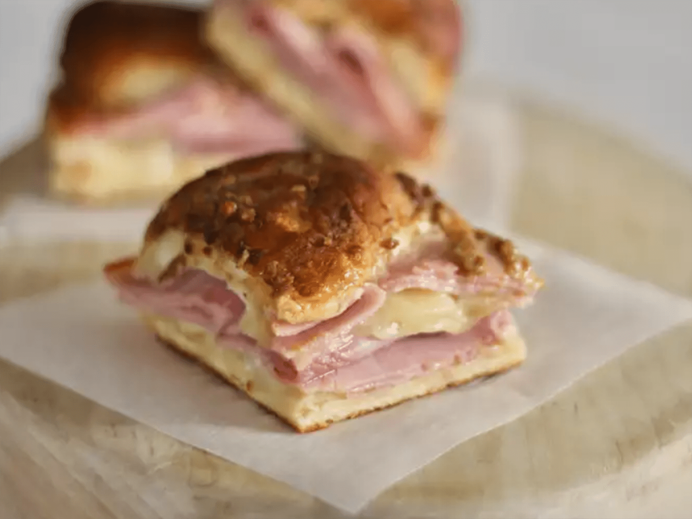

Baked Ham and Cheese Sliders

Savory baked sandwiches
The sandwich include ham and cheese, and this makes it appropriate for parties! Anyone can just grab a bite and it tastes good.
Ingredients
- 3/4 cup melted butter
- 1/2 teaspoons Worcestershire sauce
- 1/2 tablespoons poppy seeds
- 1 tablespoon dried minced onion
- 24 mini sandwich rolls or 12 large
- 1 pound thinly sliced cooked deli ham
- 1 pound thinly sliced Swiss cheese
Steps
- Gather ingredients and put them in the oven. Preheat to 175 degrees C.
- Mix butter, Dijon mustard, Worcestershire sauce, poppy seeds and dried onion.
- Separate the tops from the bottoms of the rolls; arrange the bottom pieces in a layer in the prepared baking dish. Layer about 1/2 of the ham onto the rolls; add a layer of Swiss cheese and top with remaining ham slices.
- Place the tops of the rolls onto the sandwiches. Pour mustard mixture evenly over the rolls.
- Bake for about 20 minutes, until the cheese has melted.